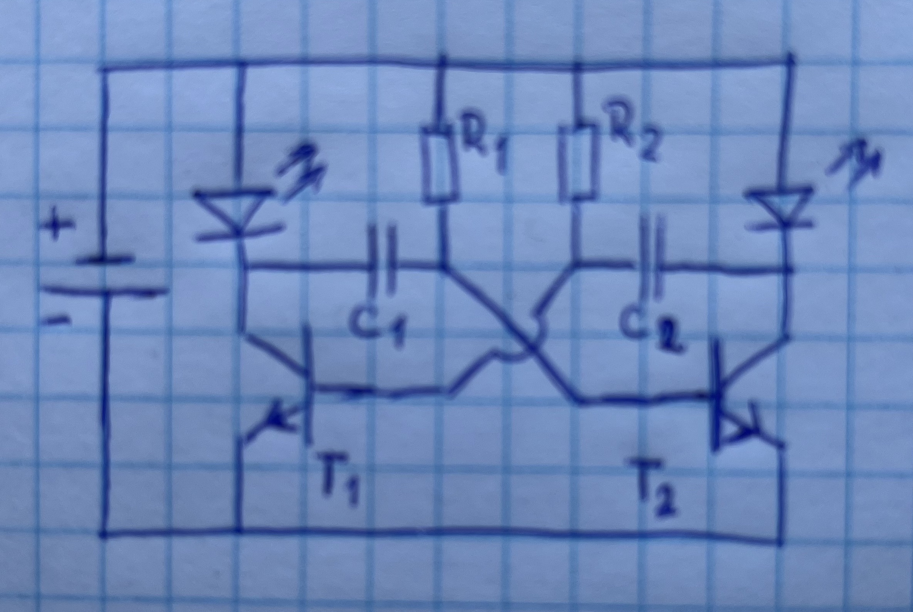
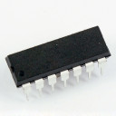
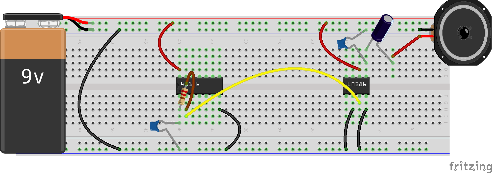

Preparation
Last week, we introduced several basic components: resistors, capacitors and transistors. In this week, we will use this knowledge to have several of these components work together.
- Study this site on logical gates. Though we're not going to use them all, it's good to know what each one is and how they work.
- Have a look at this video (5:58) explaining the timing aspects of capacitors.
- Look at the first eleven minutes of this video, explaining how servo motors work (you can skip over the parts on gears, if you want). The last four minutes of this video are about controlling the servo motor with an arduino, which we are not going to do this week.
Exercise 1: Signal inversion
Last week, we introduced several logical gates: we made an OR-gate and worked on an AND gate. One of remaining gates is the NOT-gate, whose truth-table can be found below. Basically, this gate functions as a signal-inverter: it returns whatever is NOT inputted.
| A | NOT A |
|---|---|
| 1 | 0 |
| 0 | 1 |
Just to get your juices flowing at the start of this lab-course, we are going to make this relatively simple circuit. In the assignment for this week, we will be using this signal-inverter in quite some detail (however, we will use an integrated circuit in this case).


Re-create this circuit on your breadboard and make sure it works. Explain why it is doing what it is. Do you think that this is the best circuit for a signal inverter?
Exercise 2: Timing an event
Timing is an essential part in most computing processes, and the system we are creating here is used in lots of modern day systems (of course in integrated circuits and a bit more acccurate, but still).
Have a look at the circuit below. With the switch open, current flows from the positive source throught R2 to the base of the transistor, thereby allowing current to flow over R3 and the LED back to the ground.
When we close the switch, current flows over R1 to the capacitor in the middle, allowing it to charge itself. However, as you know a fully charged capacitor can be seen as an open switch, so the previous flow of the current (with the switch open) is restored once the capacitor is completely charged.


Re-create this circuit on your own breadboard and see what happens when you close the switch. Can you explain in your own words why the circuit functions as it does? Why is it important that R2 ≫ R1? Experiment with different values for the capacitor; can you explain the differences in behavior?
Exercise 3: An astable vibrator
Now that we know how to time an event and the effects of capacitors connected to the base of a transistor, we can use that knowledge to have two seperate transistors connected to two seperate capacitors.
Have a look at the schematic below. The voltage on the left side of C2 controls transistor T1. The voltage on the right side of C1 controls transistor T2. When transistor T1 turns ON, it changes the voltage of C1 so that T2 turns off. After a short while, the voltage of C1 rises back up and turns on the transistor T2. When transistor T2 turns on, it changes the voltage of C2 so that T1 turns off. This keeps repeating.
So what do you think will happen?


Re-create this circuit on your own breadboard – you probably need to add some resistors between the high voltage and the LEDs, as is shown in the lower image. As you are basically making the same circuit twice, make sure you use the same components on both sides: same resistor-values, same capacitor values, two of the same transistors (two of the types you find on this link).
When you're done, switch it on (give current to it). If all goes well, you have just created your first astable multivibrator. This is a system that can be in one of two states and is used frequently in all kinds of applications. Refer to this video on youtube to get a good explanation of what actually happens.
Now experiment with different values for the resistors and/or the capacitors. Make sure you understand why the circuit is doing what it is doing. Also try to replace one (or both) of the resistors with a sensor. Document your findings using images and text.
Exercise 4: Hexschmitt inverter and sound
Introduction
In this last exercise, we are going to integrate all the knowledge we have gained so far. We will use capacitors connected to a signal invertor and a resistor to create some kind of oscillation. And when we have oscillation, we can produce sound...
This idea is quite simple – have a look a the image below. We know that the signal inverter inverts the signal. So when the input is high, the output is low. That allows that capacitor to fill with charge: a lot of electrons gather up on the upper plate, until the charge of the capacitor is almost as high as the input.
When that happens, the charge starts to leave through the resistor to the other side of the inverter. That continues until the capacitor is empty again. But that means that the input of the inverter becomes low, thereby making the output high. So, charge is going back through the resistor back to the capacitor, until that is completely charged again; and so on and so forth.
So we have oscillation. We can tap that off at the side of the resistor (because of the resistance of the tapping instrument, we don't do it at the side of the capacitor) and make it visible using an oscilloscope – or better: to make it audible using an amplifier.
Pin layout
Luckely, we don't have to make all these things ourselves (also because the inverter that we are going to use is subtly different than the inverter we made ourselves). Both for the inverters and the amplification we are going to use some integrated circuits, or IC's.
As its name suggests, IC's encapsulate a lot of functionality in one (tiny) system. We connect with this functionality through their pins, so you need to be able to read a pin-layout in a document sheet and connect those to the specific pins on the chip. Every IC therefore has a small half moon on one of its sides, to enable the user to determine the numbering of the pins. This principle is shown in time image below (of course, the number of pins on an IC can vary):

Hardware
For this exercise, we are going to use two IC's: the CD40106B CMOS Hex Schmitt-Trigger Inverters (or 40106 for short) and the LM386 Class-AB audio amplifier (LM386). The 40106 actually has six inverters, but in this exercise we are only going to use one (we'll use the other ones in the assignment).

Below, you find the pin layout of the 40106. As you can see, pin 2 gives the opposite of pin 1, pin 4 the opposite of pin 3, etc. The chip is powered through pin 14 (VDD) and grounded through pin 7 (VSS).
The next image shows the minimal setup of the LM386. This chip is powered through pin 6 and grounded through pins 2 and 4. The input signal is connected with pin 3, while its (amplified) output is connected with pin 5 (using a few capacitors).
Create your own beep-machine
Now, you need to use this knowledge to generate a sound (beep) with the 40106 and amplify this with the LM386 – see the images below.


You could experiment with different values for the capacitor and the resistor. The frequency of the oscillation is given by the formula below:
f ≈ 1.5 / (RC)
In this formula, f is the frequency in Hz, R is the resistance in ohms and C is the capacitor in fahrad. So if the resistor is 10kΩ (104 Ω) and your capacitor is 100μF (10-4 F), the frequency becomes 1.5/(104 × 10-4) = 1.5/1 = 1.5Hz (have a look at the wikipedia on prefixes to see how that works). Remember that the frequency of audible sound is about 20Hz to 20_000 Hz.
To get the frequency of your choice, you should use very small capacitors and relatively big resistors; you could start off with a C of 100nF and a R of 10kΩ. Check this link to see how the values of those small capacitors is given.
Assignment
For this week, you are required to use more than one of six inverters that you find on the 40106. Below, we give you two examples that you can choose from, but you can also come up with your own experiment. We will start the next session with a discussion of what you have found out.
The first example: add a light dependent resistor (LDR) to the oscillation that you have build above, so that the frequency of the tone is dependent on the amount of light given to the LDR. Next, create a low frequency oscillation (e.g. 1.5 Hz) on a second pair of pins. Use this second oscilliation to make an LED blink. Now, put this LED opposite the LDR, so that the frequency of the sound is changing with the blinking LED. You could even add a second LED or potentiometer to change the frequency of the blinking.
Hint: you will need to add a resistor between the LED and the output of the oscillation, because otherwise there's an easy path to ground.
The second example: create two oscillation just like the one you have made in the exercise above. Add a variable resistor (LDR, potentiometer or some other sensor) to the first of these. Now, connect the output of the first with the input of the second, using a capacitor (think about what side should be zero and which side should be one) and use the output of the second as the ultimate output (wiring that to your amplifier). Now, what happens when you change the resistance of the first circuit? Can you explain the effect?
Hint: if you have done it correctly, you will notice the the frequency of the second oscillation (so, the output) now changes in steps instead of just gradually. You can make use of this phenomenon to create different tones. Now, if you know that the resisting material in resistors is actually carbon, and if you know that your pencil also is made of carbon, can you think about how to combine these two... 😎🤔🎹'